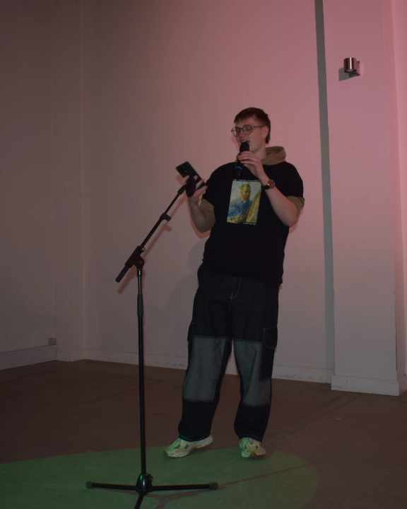

Ugens digt!
Emil Riisager skriver i denne uge om vanskelighederne ved at bo ude på SU, han bruger et humoristisk tvist, der drager læseren ind i hans krøllede og sjove hjerne.
Han har selv dette at sige; "det her blev presset ud i en hast, før jeg skulle optræde med det til Aarhus SLAM, men det blev færdigt, det giver nul mening, men det var hvad det blev til
Jaaa, så var han har
Mange gode gutter, men han manglede bar
Mangelvare kan man godt kalde mig
Kan være svært at holde det inde, når følelserne samler sig
Jeg tænker ik så tit
Tid går hurtigt, går for vidt
Har I det godt jeg har det skidt
Men i poesien blir jeg bidt
Lidt intens måde at starte på
Jeg lidt en åben bog
Jeg deler bare den måde som jeg har det på
Jeg kender kun sociale spilleregler
Fra det skældud der rammer ind
Jeg ved stilheden den dræber
For stilhed gir mig tankespind
Jeg er ny til det her, med at leve for sig selv
Køber mig fattig i kondomer, for jeg kan ikke vælg
Det svært muligheder ligger tilrette på sølvfad
Men det som at vifte en Marabou foran en diabetiker når man er flad
Jeg havde penge en gang, men de blev taget af skat
Jeg fatter ikke b-kort, pension eller en hat
Langt væk skolebænken, væk tænken andet end på penge og på pat
I went my own way and didnt make it, min sommer den var ik brat
Jeg får spat, af politik om pastinakker
Makker se jer for i bakspejlet når bakker
Trækker ord tilbage så hurtigt som en junkie pakker
I kina spiser de hunde, men ogs i Ohio, hør jeg snak om
Nak og æd kører på repeat
Hvis nu verden den går under skal jeg jo ha noget at spise
Jeg en, trendsætter, doomsday prepper
Har solcreme til sommer, og til vinter har jeg sweater
Jeg har hovedpine piller, og melatonin
Masser af grøntsager, det kaldes selvmedecin
Det da fint, 9 liter vand er da meget lettere'
Men det for kedeligt, jeg vil ha noget bedre
Jeg sætter mig til rette med øl nok til tre dage
Men hvis russerne kommer hejser vi nok det hvide flag
Det de tendenser jeg er vokset op med
Jeg ik voksen nok men, ved hvad jeg godt gad?
Jeg gad ik gi op, jeg gad godt at livet var lidt lettere
Tilbage til de dage hvor glæden lå hos fætter
BR, nu ligger glæde fjernt, får en fært med Nak og æd på DR
Det jeg har lært, so far af at bo for mig selv
Er at uanset hvor lort det går, blir tingene gode alligevel
Men lige nu, er det krise på krise
Freden kommer nok samme tid som flyvende grise
Spise har vi nok af her, ik så meget i Palæstina
I fangenskab, det en bang-sag, de samler trop i tel-aviv
Ja verden brænder, det går op i lort og lagkage
Og så skal i høre på mig der har den frækhed at klage
Om mit shit, jeg ved det skidt, men sådan er det
Det ik fedt, men jeg en åben bog der har fået færten
Lader den røde tråd klippe, så held og lykke med at finde den
Jeg jo ny til det her tankes spil, lad os se om jeg kan vinde den
Mange tak til Emil Riisager Axelsen for denne uges digt!
Kunne du tænke dig at vinde ugens digt og få promoveret dig selv lidt?
Så send et digt in Her!
Af Emil Riisager Axelsen
 "Hvis I kan lide teksten, så kan i finde mig
I UngK hvert måned, samt til SLAM finalen
i november!"